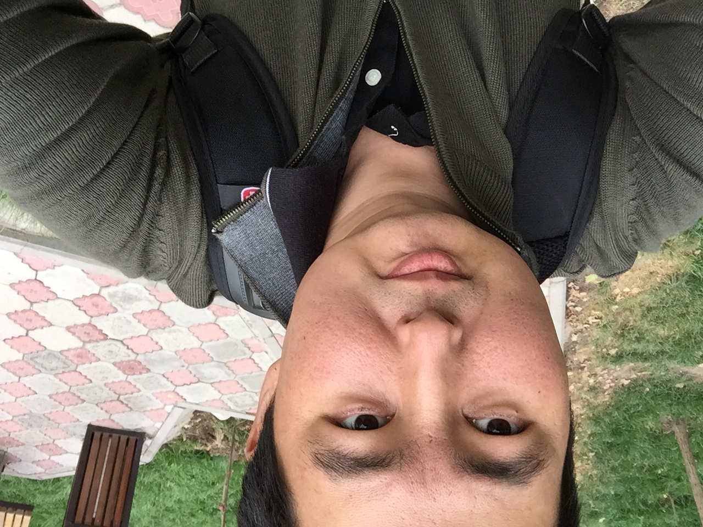

CV
Name: Alisher Alimkanov
Contact info
- email: alimkanov.alisher@gmail.com
- mobile number: +996 (557) 474579
- skype: alisher.karahan
- telegram: @AlisherAlimkanov
Education
- 2015 nov - Kyrgyz-Japan Center of Human Development Social Media Marketing Course (SMM)
- 2012 apr. – 2012 july - Kyrgyz-Japan Center of Human Development. Practical Business Management Course
- 2010 sept. – 2014 - Kyrgyz-Japan Center of Human Development Japan languages course
- 2011 may - National IT Center “Windows Server 2003” Course
- 2008 apr. - 2008 dec - “American school”, English courses
- 2005 may. - 2010 july - KGTU named I. Razzakov, Energy faculty. Speciality: Electrician Engineer
- 2004 sept. - 2005 june - School of Music named Shubina , brass tube class
- 1995 sept. – 2004 june - Secondary school № 27
Experience
- 2018 apr - until now
LLC «CRM Technologies». Sales Department. Head of Department - 2017 may- 2018 april-
Closed Joint Stock Company Saima Telecom. Corporate Sales Group Head of Group - 2010 sept. – 2014 - Kyrgyz-Japan Center of Human Development Japan languages course
- 2014 nov- 2017 may
Open Joint Stock Company “ Kyrgyz Telecom”, Central office. Sales Department. Head of corporate sector - 2005 may. - 2010 july - KGTU named I. Razzakov, Energy faculty. Speciality: Electrician Engineer
- 2004 sept. - 2005 june - School of Music named Shubina , brass tube class
- 1995 sept. – 2004 june - Secondary school № 27
Open Joint Stock Company “ Kyrgyz Telecom”, BCTE, Leading specialist of marketing and sales department - **2012 nov.- 2014г oct.**
Open Joint Stock Company “ Kyrgyz Telecom”, BCTE. Sales manager - **2012 sept. – 2012 oct.**
Open Joint Stock Company “Kyrgyz Telecom”, BCTE Internet provider “Jet”, Brigadier of internet group - **2011 feb. – 2012 sept.**
Open Joint Stock Company “Kyrgyz Telecom”, BCTE Internet provider “Jet”, Electrician - **2009 nov. - 2011 feb.**
Open Joint Stock Company “Kyrgyz Telecom”, BCTE, Center of Technical Maintenance Line-Cable Facilities, Electrician *** ## Achievement - **2014**
Thank-you letter from CEO BCTE Kyrgyz Telecom - **2011 april**
Central Asia Japanese language competition– organization and holding of the event - **2005 sept. – 2010 july**
100% scholarship for study in KGTU named I.Razzakova - **2009-2017**
Growth from electrician of linear cable structures to the head of corporate sales sector at Kyrgyztelecom OJSC *** ## Skills - **Languages:**
Kyrgyz - native; Russian fluently; English- with dictionary. Japanese – with dictionary - **Computer skills:**
Microsoft Office, Internet, Windows Server 2003. - **Personal qualities:**
Interpersonal skills, Purposefulness, Ambitiousness, Tolerance, Ability to learn quickly